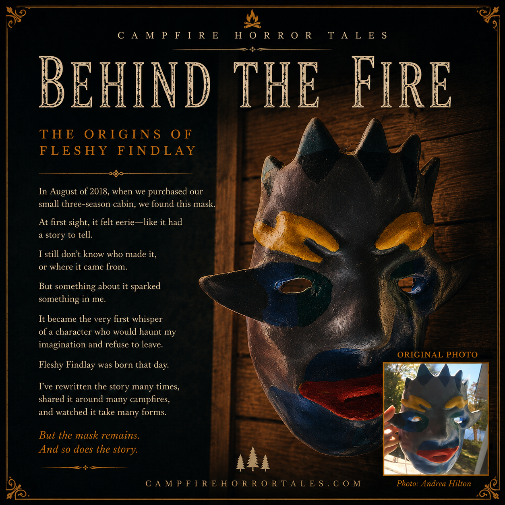
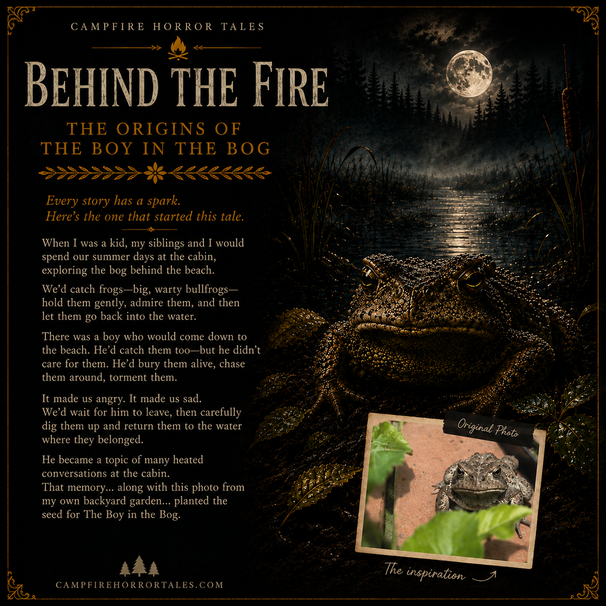
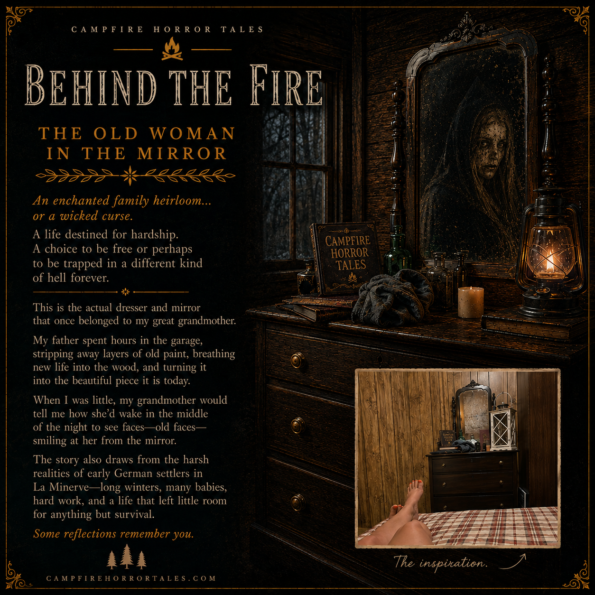

Fleshy Findlay
Where it began
A hand-painted mask at a Laurentian cabin became the first spark for Campfire Horror Tales.
Step behind the fireBEHIND THE FIRE
Let me tell you a Campfire Horror Tale.
ORIGINS
Dawn Hill writes from the quiet edge of the Laurentian woods, where family memories, dark lakes, and old folklore still have stories to tell. These stories begin in the hush between the trees, in the small sounds of a campfire, and in the feeling that the forest is listening back.
Campfire Horror Tales began as a way to gather those old stories and hold them close—like a lantern in the dark. Each tale carries the memory of a place, a family story, and the sense that something ancient might still be waiting just beyond the light.
Story Origins
Notes on the places, memories, images, and creative choices that helped shape the fiction. These reflections explore inspiration; the stories themselves remain original fiction.

Fleshy Findlay
A hand-painted mask at a Laurentian cabin became the first spark for Campfire Horror Tales.
Step behind the fire
The Boy in the Bog
Cabin summers, a bog behind the beach, and a garden photograph helped shape the story's first spark.
Step behind the fire
The Old Woman in the Mirror
Family history, an inherited dresser and mirror, and remembered stories are the documented inspiration for this fiction.
Step behind the fire
A Doll for a Dollar
A Québec fair, a handmade telephone, and an old doll are the real spark. Andrea's final reflection is awaiting review.
Step behind the fire